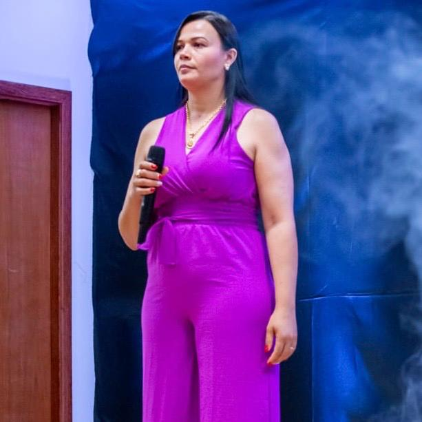
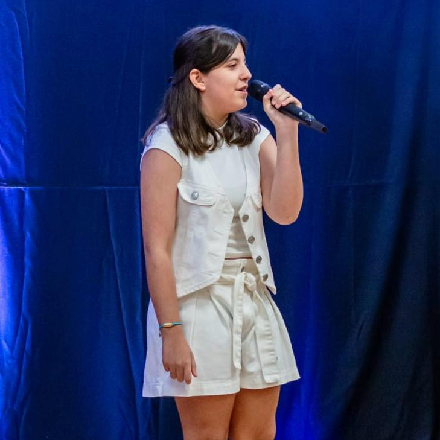
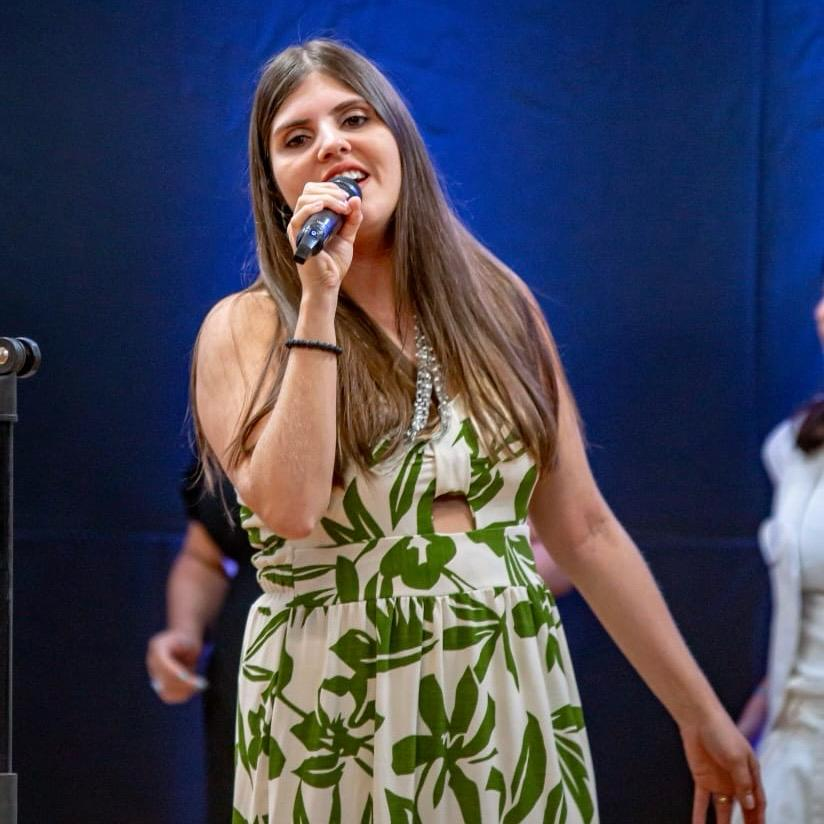
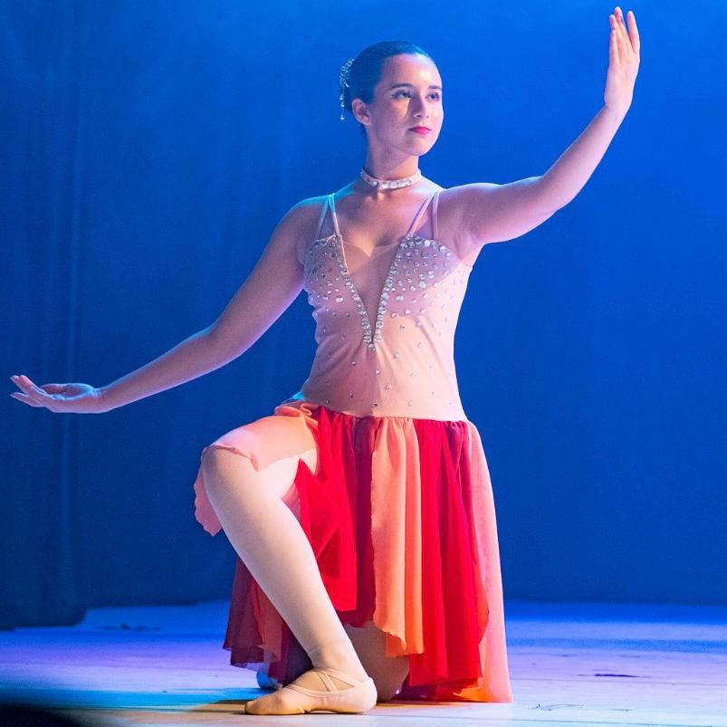

My Dream Is Me.
-
UM SONHADOR
Daniel
A música “Um Sonhador” fala da fé no destino e a convicção de que, em algum momento, o amor surgirá naturalmente. É uma celebração da esperança romântica e da crença de que o amor está ao alcance daqueles que não desistem de procurá-lo.
-
TÃO BOM PRA MIM
Érica
A letra reflete uma profunda gratidão pelo cuidado divino, reconhecendo que Deus sempre cumpre suas promessas e provê as necessidades de seus filhos. É um convite para os ouvintes refletirem sobre a bondade de Deus e a responderem com gratidão e adoração.
-
O MELHOR DA VIDA AINDA VAI ACONTECER
Salete
É uma reflexão profunda sobre a libertação pessoal e a esperança no futuro. A canção também aborda a importância de deixar o passado para trás para poder seguir em frente, uma lembrança carinhosa de um olhar compartilhado, simbolizando a conexão humana e a importância dos momentos significativos na vida.
-
DIZ
Jusciana
É uma canção que mostra a luta contra as inseguranças e as vozes negativas que tentam definir seu valor e capacidade. A música sugere que, independentemente das circunstâncias ou sentimentos pessoais, a identidade de uma pessoa é inabalável quando ancorada naquilo que Deus diz sobre ela.
-
TREVO
Isadora
Esta canção é uma celebração poética do encontro afetivo e da simplicidade que traz contentamento à vida. Uma canção que celebra o amor e a sorte de encontrar alguém que transforma o cotidiano em algo extraordinário.
-
OS SONHOS DE DEUS
Ivanete
Uma canção de motivação e fé, que reforça a ideia de que, com a confiança em Deus, é possível restaurar sonhos e visões, mesmo diante dos maiores desafios.
-
MINHA OBSESSÃO
Pamela
Esta canção explora temas de fé, amor divino e a busca por um significado maior na vida, algo que muitos ouvintes podem encontrar ressonância em suas próprias jornadas espirituais ou emocionais.
-
FEELING GOOD
Júlia
É uma canção que aborda a ideia de que a liberdade é um estado de espírito, ressoa com a luta pessoal e coletiva por autonomia e autoconhecimento. Se tornou um hino atemporal que inspira ouvintes a abraçar a mudança e a encontrar alegria e gratidão nas pequenas coisas da vida.
-
ALWAYS
Luan
Uma canção que captura a essência do amor que resiste ao tempo e às adversidades.
-
MY HEART WILL GO ON
Yasmin
A canção se tornou um hino para aqueles que acreditam no poder do amor eterno e na sua capacidade de superar qualquer obstáculo.
-
DIE WITH A SMILE
Emanuelle
Uma música que nos faz lembrar, apesar das adversidades, o amor verdadeiro é o que nos dá força e propósito, e que, no fim, o que realmente importa é estar ao lado de quem amamos, enfrentando juntos o que quer que venha.
-
DREAM
Isabella
Uma canção de autoafirmação que encoraja os ouvintes a perseguirem seus sonhos com coragem e a não permitirem que ninguém os acorde dessa jornada de autodescoberta e realização.
-
POUPORRI SERTANEJO
Ana Laura
Uma fusão de três canções que exploram diferentes facetas do amor e da saudade.
-
CIRCLE OF LIFE
Tris
Eliane Pereira (Flauta Transversal)
Clara Sophia (Bailarina)
É uma celebração da vida e um lembrete de que todos fazemos parte de algo maior, conectados pela teia da existência.
-
PARTICIPAÇÃO ESPECIAL
Clara Sophia (Bailarina)
Encanta com seus passos, mostrando que os sonhos ganham vida quando a gente se entrega de coração. Cada movimento é um lembrete de que vale a pena seguir dançando, não importa o desafio.